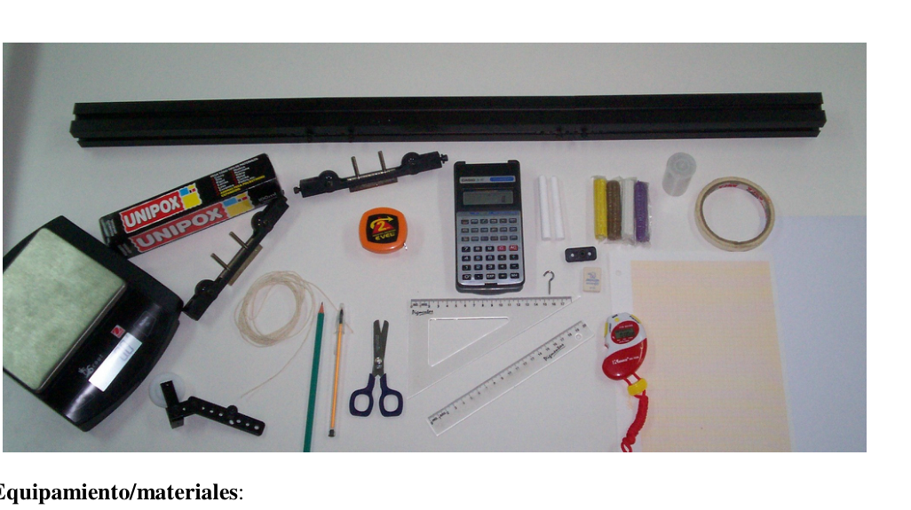

Experimental: conservacion de la cantidad de movimiento
- RÍO SEGUNDO, CÓRDOBA. AZUL.
Conservación de la cantidad de movimiento en colisiones
Objetivo:
El estudio cuantitativo de la cantidad de movimiento y de la energía de un sistema de
dos cuerpos antes y después de un choque.
Consideraciones Teóricas: La información que nos proporciona el conocimiento de la velocidad de dos móviles iguales es insuficiente desde el punto de vista dinámico para comparar sus movimientos, según puede comprobarse analizando, por ejemplo, el movimiento de dos vehículos de diferente masa que se desplazan a igual velocidad: el más difícil de detener es aquel que tiene mayor masa. De ello se deduce que el estado dinámico de un cuerpo depende de dos magnitudes: su masa y su velocidad. A fin de combinar estas dos magnitudes aplicaremos el concepto de cantidad de movimiento pρ de un cuerpo que se define como el producto de su masa por su velocidad: v m p .
ρ . La cantidad de movimiento es uno de los conceptos de más importancia, no sólo para la Física, sino también para la Astronomía, Química y Biología. Se denomina colisión o choque a una interacción de corta duración entre dos o más cuerpos que están muy próximos entre sí. Para el sistema de cuerpos en interacción mutua, es válida la ley de conservación de la cantidad de movimiento total, ya que las fuerzas que actúan son interiores. Las ausencia de fuerzas exteriores sobre los cuerpos que chocan garantiza la conservación de la cantidad de movimiento del sistema, total pρ . Entonces, las velocidades de los cuerpos antes y después del choque se relacionan según: después tot antes tot P P
despues despues antes antes V m V m V m V m 2 1 1 2 1 1 ⋅ + ⋅
⋅ + ⋅
Esta ecuación es válida para cualquier situación de choque.
Introducción: El experimento consiste en estudiar la variación en el tiempo de la velocidad,v , el momento v m p .
, y la energía cinética, c E , antes y después de provocar un choque de dos carros M1 y M2 (M2 inicialmente en reposo), usando el dispositivo de la figura.
Para tener en cuenta:
El movimiento de los carros puede hacerse sobre un riel metálico de poco roce. Forzando el
movimiento de M1 use un hilo y una masa extra ( m ) como indica la figura. Detenga los carros
con la mano antes de que los mismos golpeen la polea. Esto protege el instrumental y evita que
el sistema se desnivele por el impacto.
Para la masa m dispone del material necesario a fin de lograr una masa apropiada (tubito de
plástico, plastilina y gancho).
De acuerdo al material y equipamiento proporcionado arme un dispositivo similar a la figura de
este problema, por el cual puedan desplazarse los carritos. Usted dispone de todos los elementos
necesarios para el correcto armado del dispositivo, ante cualquier inconveniente consulte en
forma oral al docente encargado en el laboratorio, no se podrán hacer consultas conceptuales.
M1 M2 m
Equipamiento/materiales:
• Un par de cuerpos (carritos) que puedan rodar sobre una mesa suave. • Un riel con una ranura. • Un cronómetro. • Una polea con rayos. • Un hilo. • Pegamento. • Hojas milimetradas, hojas blancas. • Lápiz, lapicera, goma, cinta de papel, tijerita, regla y escuadra. • Un tubito de plástico (masa m), ganchito, tornillo. • Plastilina, tiza. • Balanza electrónica. • Cinta métrica. • Calculadora.
Desarrollo
Produzca la colisión entre el carrito M1 y M2 como dispone la figura de esta experiencia,
tomando en cuenta las magnitudes físicas implicadas en este evento (espacio y tiempo, fuerzas
implicadas, masas, longitud del hilo y aquellas medidas que usted considere relevantes).
Tenga presente que
1x es la distancia de M1 al centro de la polea y
2x es distancia de M2 al
centro de la polea. De acuerdo a los valores obtenidos para v y t , determine la aceleración de
antes del choque M1 con M2. Luego de realizar las mediciones y cálculos necesarios,
confeccione
una
tabla
indique
los
siguientes
datos:
1
m ,
2
m ,
1x ,
2x ,
1v ,
2v , m , 1t , 2t ,
1p ,
2p ,
2
1
p
p +
.
Describa todo lo que usted realizó para armar el dispositivo, como determinó
experimentalmente las mediciones y el porqué de utilizar los materiales a fin de determinar
ciertas magnitudes.
Registre en la hoja todos los cálculos y mediciones que obtenga.
Obtenga las expresiones que permiten calcular la velocidad lineal del móvil M1 a partir de la
medición de los tiempos provistos por el cronómetro. Analice qué otros parámetros del
experimento debe medir para obtener la velocidad lineal v .
Con el presente dispositivo se obtienev usando el giro de la polea. ¿Esta velocidad que obtiene
es una velocidad instantánea, velocidad media, ninguna de las dos, o una aproximación de
alguna de ellas?
2 1 0 2 1 ) ( . . ) ( . ) ( t v M t E t a v t v c
= Estudie solamente el movimiento de M1 (sin la presencia de M2). Represente gráficamente 1 1 p v , y 1c E en función del tiempo. Describa el tipo de movimiento que observa para el sistema. En un gráfico de aceleración en función del tiempo represente los valores de la aceleración media. ¿Qué concluye acerca del procedimiento usado para obtener la aceleración? Use el valor de la aceleración media determinada y el valor de la velocidad inicial 0v obtenida experimentalmente y represente gráficamente las funciones:
Con este procedimiento ¿puede demostrar la conservación de la cantidad de movimiento? ¿Qué sucede con la energía cinética?
Analice las fuerzas que actúan sobre el sistema e indique el origen de las fuerzas que dan lugar a
la aceleración del sistema.
Realice un esquema e indica en el mismo las fuerzas actuantes en el sistema.
De acuerdo a la experiencia realizada ¿que sucede con la cantidad de movimiento antes y
después del choque? Explique porque pueden producirse errores o diferencias entre lo registrado
experimentalmente y lo calculado analíticamente?
¿Cómo modificaría esta experiencia a fin de que obtenga resultados más óptimos?
¿Cómo fue la variación de la velocidad en función del tiempo durante esta experiencia?
Análisis de la 2da ley de Newton
Modifique el dispositivo de modo que sólo estén presentes el carrito M1 y la masa m. Dispone
de los materiales necesarios a fin de lograr la situación dispuesta en la figura, demuéstrela
experimentalmente.
De acuerdo a los elementos provistos determine la tensión T en el hilo. Describa todo lo que
realiza a fin de obtener el valor analítico de T.
Describa todo lo que usted realizó para armar el dispositivo, como determinó
experimentalmente las mediciones y el porqué de utilizar los materiales a fin de determinar
ciertas magnitudes.
Realice un esquema e indica en el mismo las fuerzas actuantes en el sistema.
Calcule la tensión en el hilo.
Las fuerzas presentes ¿son conservativas? ¿de qué depende este estado? La longitud del hilo ¿en
que modifica la situación planteada? Explique.

Topic: Conservation of Momentum Metodi: Conservation of Momentum, Experimental Data Analysis, Graph Linearization Competenze: Physical Reasoning, Experimental Data Analysis Objects: Cart, Pulley Fonte: Testo (PDF) — p.1
Esperimento: conservazione della quantità di movimento
-
- RIO SECONDO, Cordoba. Blu.
Conservazione della quantità di movimento in collisioni
Obiettivo: Lo studio quantitativo della quantità di movimento e dell’energia di un sistema di Due corpi prima e dopo un colpo.
Considerazioni teoriche: Le informazioni che ci forniscono la conoscenza della velocità di due cellulari La differenza tra i movimenti di un gruppo di persone non è sufficiente dal punto di vista dinamico per confrontare i loro movimenti, secondo Si può verificare analizzando, per esempio, il movimento di due veicoli di massa diversa che si spostano a velocità uguale: il più difficile da fermare è quello che ha più massa. De La dinamica di un corpo dipende da due dimensioni: la sua massa e la sua massa. velocità. Per combinare queste due magnitudini, applicheremo il concetto di quantità di movimento pρ di un corpo che si definisce come il prodotto della sua massa per la sua velocità: v m p .
ρ . La quantità di movimento è uno dei concetti più importanti, non solo per La fisica, ma anche l’astronomia, la chimica e la biologia. Si chiama collisione o collisione un’interazione di breve durata tra due o più persone. corpi che sono molto vicini. Per il sistema dei corpi in interazione reciproca, è La legge di conservazione della quantità di movimento totale, in quanto le forze che agiscono Sono interni. L’assenza di forze esterne sui corpi che si schiantano garantisce la conservazione della quantità di movimento del sistema, totale pρ . Quindi, le velocità dei i corpi prima e dopo lo scontro sono correlati secondo: dopo tutto prima tutto P P
dopo dopo prima prima V m V m V m V m 2 1 1 2 1 1 ⋅ + ⋅
⋅ + ⋅
Questa equazione vale per qualsiasi situazione di colpo.
Introduzione: L’esperimento consiste nello studio della variazione nel tempo della velocità, v, il momento. v m p .
, e l’energia cinetica, c E , prima e dopo aver causato un colpo di due auto M1 e M2 (M2 inizialmente a riposo), utilizzando il dispositivo della figura.
Per tenere conto: Il movimento dei carri può essere fatto su un binario metallico di poco strofinamento. Forzando il M1 movimento usa un filo e un’ulteriore massa (m) come indicato nella figura. Fermati i carri con la mano prima che loro stessi colpiscano il pole. Questo protegge l’instrumental e impedisce che Il sistema si allontana dall’impatto. Per la massa m dispone del materiale necessario per ottenere una massa appropriata (tuto di di plastica, plastica e gancio). Secondo il materiale e l’equipaggiamento fornito, un dispositivo simile alla figura di Questo problema, che permette di spostare i carri. Hai tutti gli elementi. La sicurezza è una condizione che è necessaria per il corretto armamento del dispositivo, per eventuali inconvenienti consultare La formazione non è necessaria per l’intervento del docente che si occupa del laboratorio.
M1 M2 m
Equipaggiamento/materiali:
• Un paio di corpi (carretti) che possono ruotare su un tavolo morbido. • Un reggito con una ranura. • Un cronometro. • Una polema con i raggi. • Un filo. • Collante. • Foglie millimetriche, foglie bianche. • Pensillo, lapislatura, gomma, cinta di carta, sciarpe, regola e squadra. • Un tubo di plastica (massa m), croccato, tornello. • Plasticina, scarpeta. • Sbalzo elettronico. • Cintura metrica. • Calcolatrice.
Sviluppo Produce la collisione tra il carrello M1 e M2 come si vede nella figura di questa esperienza, considerando le magnitudini fisiche implicate in questo evento (spazio e tempo, forze La Commissione ha adottato una decisione che prevede che il sistema di controllo dei dati sia stato adottato in base alle misure di controllo. Tieni presente che 1x è la distanza da M1 al centro della polea e 2x è la distanza da M2 a centro della polea. In base ai valori ottenuti per v e t , determinare l ’ accelerazione di prima dell’incontro M1 con M2. Dopo aver effettuato le misure e calcoli necessari,
- Confezionare . Una . tabella Indicare Le seguenti dati: 1 m , 2 m , 1x , 2x , 1v , 2v , m , 1t , 2t , 1p , 2p , 2 1 p p + . Descrivi tutto quello che hai fatto per mettere a punto il dispositivo, come hai determinato. La misurazione è stata effettuata in modo sperimentale e la motivazione per cui si utilizzano i materiali per determinare
- di certe dimensioni. Registrate sul foglio tutti i calcoli e le misure che ottenete. Ottieni le espressioni che permettono di calcolare la velocità lineare del mobile M1 a partire da misurazione dei tempi forniti dal cronometro. Analisi di altri parametri del L’ esperimento deve misurare per ottenere la velocità lineare v. Con questo dispositivo si ottiene utilizzando il giro della polla. Questa velocità che ottiene è una velocità istantanea, velocità media, nessuna delle due, o un approccio di
- Una di queste?
2 1 0 2 1 ) ( . . ) ( . ) ( t v M t E t a v t v c
= Studiare solo il movimento di M1 (senza presenza di M2). Rappresentazione grafica 1 1 p v , y 1c E dipende dal tempo. Descriva il tipo di movimento che osserva per il sistema. In un grafico di accelerazione in funzione del tempo rappresenta i valori dell’accelerazione media. Che conclusione ha fatto sulla procedura usata per ottenere l’accelerazione? Usa il valore dell’ accelerazione media determinata e il valore della velocità iniziale 0v ottenuto experimentalmente y represente gráficamente las funciones:
Con questa procedura, può dimostrare la conservazione della quantità di movimento? Cosa? che succede con l’energia cinetica?
Analizzare le forze che agiscono sul sistema e indicare l’origine delle forze che danno luogo a l’accelerazione del sistema. Realizza un schema e indica in esso le forze attive nel sistema. Secondo l’esperienza realizzata, che succede con la quantità di movimento prima e dopo l’incidente? Spiegare perché possono verificarsi errori o differenze tra i dati registrati sperimentalmente e calcolato analiticamente? Come modificare questa esperienza per ottenere risultati ottimali? Come è stata la variazione della velocità in funzione del tempo durante questa esperienza?
Analisi della seconda legge di Newton
Modificare il dispositivo in modo che siano presenti solo il carrello M1 e la massa m. Dispone di
- il materiale necessario per ottenere la situazione indicata nella figura, sperimentalmente. In base agli elementi forniti, determina la tensione T sul filo. Descrivi tutto quello che hai si effettua per ottenere il valore analitico di T. Descrivi tutto quello che hai fatto per mettere a punto il dispositivo, come hai determinato. La misurazione è stata effettuata in modo sperimentale e la motivazione per cui si utilizzano i materiali per determinare
- di certe dimensioni. Realizza un schema e indica in esso le forze attive nel sistema. Calcola la tensione sul filo. Le forze presenti sono conservatrici? Su cosa dipende questo stato? La lunghezza del filo è in che modifica la situazione? Spiegami.
Topic: Conservation of Momentum Metodi: Conservation of Momentum, Experimental Data Analysis, Graph Linearization Competenze: Physical Reasoning, Experimental Data Analysis Objects: Cart, Pulley Fonte: Testo (PDF) — p.1
Experimental: conservation of the amount of movement
- Second River, Cordoba. Blue.
Conservation of the amount of movement in collisions
The objective: The quantitative study of the amount of motion and energy of a system of Two bodies before and after a collision.
Theoretical considerations: The information that gives us knowledge of the speed of two mobile phones The dynamic viewpoint is insufficient to compare their movements, according to This can be seen by analysing, for example, the motion of two vehicles of different mass They move at the same speed. The hardest to stop is the one with the most mass. De The dynamic state of a body depends on two magnitudes: its mass and its speed. To combine these two magnitudes we will apply the concept of quantity of The motion of a body defined as the product of its mass by its velocity: v m p .
ρ . The amount of movement is one of the most important concepts, not only for Physics, but also astronomy, chemistry and biology. A collision or collision is a short-term interaction between two or more people. bodies that are very close to each other. For the system of interacting bodies, it is The law of conservation of total motion is valid because the forces acting on it are They’re interiors. The absence of external forces on the bodies that collide ensures the conservation of the amount of movement of the system, Total pρ . So the speeds of the bodies before and after impact are related according to: After that All of them Before All of them P P
Then Then Before Before V m V m V m V m 2 1 1 2 1 1 ⋅ + ⋅
⋅ + ⋅
This equation is valid for any crash situation.
The Commission has also adopted a proposal for a directive on the protection of workers’ rights. The experiment consists of studying the time variation of velocity, v, the moment. v m p .
, and kinetic energy, c E , before and after causing a collision of two M1 cars and M2 (M2 initially at rest), using the device in the figure.
To take into account: The movement of the wagons can be done on a low-brush metal rail. Forcing the M1 movement use a thread and an extra mass (m) as shown in Figure 1. Stop the cars . with their hands before they hit the pole. This protects the instrument and prevents the The system is unbalanced by the impact. For mass m, the material is available to achieve an appropriate mass (tube of Plastic, plasticine and hook). According to the material and equipment provided, weigh a device similar to the figure of This is the problem that drives the cars. You have all the elements . The device is not equipped with a mechanical device, but is equipped with a mechanical device. The first is that the language of the language is not used in the language of the language of the language.
M1 M2 m
Equipment/materials:
• A pair of carts that can roll over a soft table. • A rail with a slot. • It’s a timepiece. • A lightning strike. • A thread. • Glue. • Millimeter leaves, white leaves. • Pencil, pencil, rubber, paper tape, scissors, rule and squad. • A plastic tube (m mass), hook, screw. • Plastic, chalk. • Electronic scale. • It’s a tape measure. • It’s a calculator.
Development It produces the collision between the M1 and M2 carriage as shown in the figure from this experience. taking into account the physical magnitudes involved in this event (space and time, forces The Commission will also be able to take the necessary measures to ensure that the measures are implemented in a manner that is consistent with the objectives of the programme. Please note that 1x is the distance from M1 to the center of the pole and 2x is the distance from M2 to the center of the pole. According to the values obtained for v and t , determine the acceleration of before the M1 to M2 collision. After the necessary measurements and calculations have been made, I ‘m going to make it . One . Table Please indicate The The following data: 1 m , 2 m , 1x , 2x , 1v , 2v , m , 1t , 2t , 1p , 2p , 2 1 p p + . Describe everything you did to assemble the device, as determined. Experimentally measurements and why materials should be used to determine of a certain magnitude. Write down on the sheet all the calculations and measurements you get. Get the expressions that allow you to calculate the linear speed of the M1 mobile from the measurement of the times provided by the chronometer. Check for any other parameters of the The experiment must measure to obtain the linear velocity v. This device is obtained by using the pulley rotation. This speed you get. is an instantaneous velocity, average velocity, neither, or an approximation of any of them?
2 1 0 2 1 ) ( . . ) ( . ) ( t v M t E t a v t v c
= Study only the movement of M1 (without the presence of M2). It is graphically represented 1 1 p v , y 1c And depending on the weather. Describe the type of movement you observe for the system. In a time-based acceleration graph it represents the values of the acceleration The average. What do you conclude about the procedure used to obtain the acceleration? Use the mean acceleration value and the initial speed value 0v obtained The following functions are experimentally and graphically represented:
With this procedure can you prove the conservation of the amount of movement? What? What happens to kinetic energy?
Analyze the forces acting on the system and indicate the origin of the forces giving rise to the acceleration of the system. Make a diagram and indicate the forces acting on the system. According to experience, what happens to the amount of movement before and after After the crash? Explain why errors or differences may occur between the recorded data. experimentally and analytically calculated? How would you modify this experience so that it would yield more optimal results? How was the time-speed variation during this experiment?
Analysis of Newton ‘s second law
Modify the device so that only the M1 cart and the m mass are present. It ‘s available . The Commission shall, in accordance with the procedure laid down in Article 2 of the Regulation, take the necessary measures to ensure that the information provided in the figure is adequately represented. experimentally. According to the elements provided, determine the T-tension on the thread. Describe everything you ‘ve done . is performed to obtain the analytical value of T. Describe everything you did to assemble the device, as determined. Experimentally measurements and why materials should be used to determine of a certain magnitude. Make a diagram and indicate the forces acting on the system. Calculate the tension on the thread. Are the forces present conservative? What does this state depend on? The length of the thread is The Commission has not yet taken any further action. - Explain that.
Topic: Conservation of Momentum Metodi: Conservation of Momentum, Experimental Data Analysis, Graph Linearization Competenze: Physical Reasoning, Experimental Data Analysis Objects: Cart, Pulley Fonte: Testo (PDF) — p.1